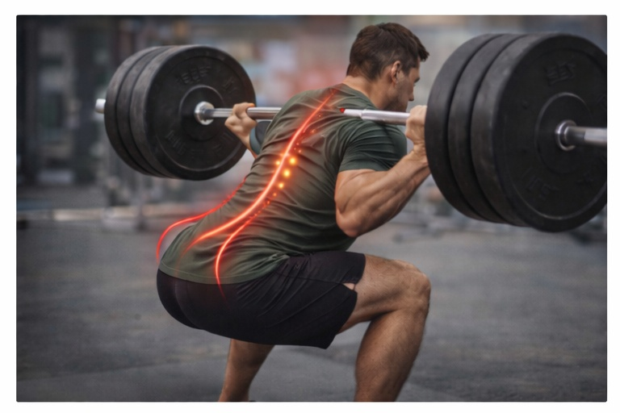
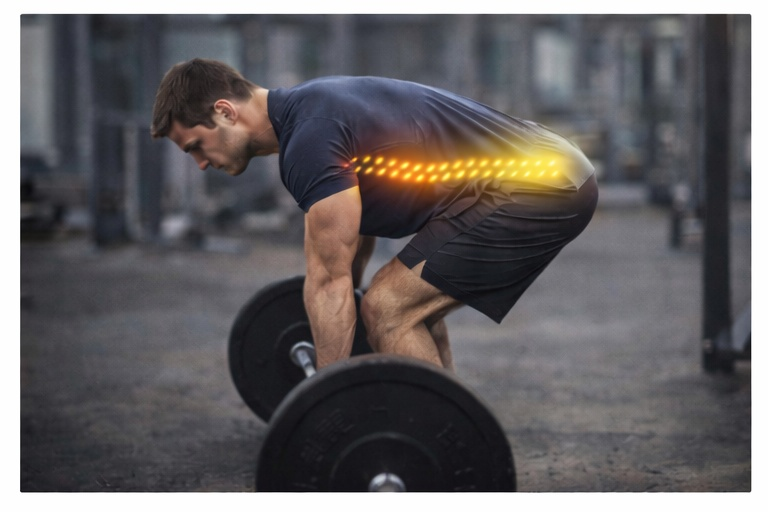

Боль в спине на тренировках
Боль во время или после упражнений часто связана с нагрузкой, техникой и контролем движения.
Боль в спине на тренировках возникает, когда нагрузка превышает возможности организма или распределяется неправильно. Ошибки в технике, недостаточный контроль движения и отсутствие восстановления увеличивают риск перегрузки. Без корректировки это может приводить к снижению прогресса и развитию хронической боли.
Основные причины
⚙️ Ошибки техники
Неправильное выполнение упражнений увеличивает нагрузку на позвоночник.

Положение спины и контроль движения влияют на распределение нагрузки.
📈 Избыточная нагрузка
Слишком большой вес или объём тренировок.

Резкое увеличение нагрузки может привести к боли в спине.
💪 Недостаточная стабилизация
Мышцы корпуса не обеспечивают контроль движения.

Слабая стабилизация увеличивает нагрузку на позвоночник.
😴 Недостаточное восстановление
Организм не успевает адаптироваться к нагрузке.
Без восстановления нагрузка накапливается.
Другие ситуации с болью в спине
Если боль появляется на тренировках — важно скорректировать технику и нагрузку, а не игнорировать симптомы.
Записаться на консультацию